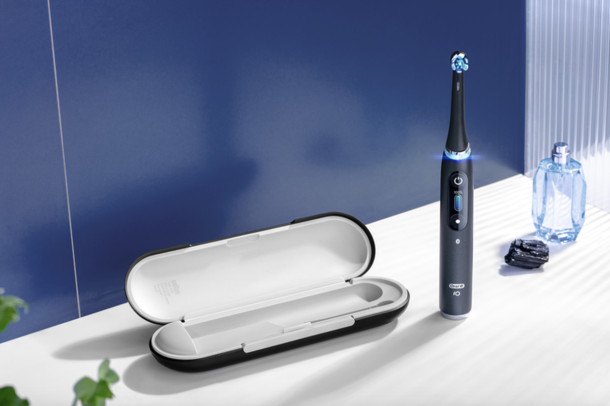

LE NETTOYAGE QUI VOUS LAISSE BOUCHE B


Notre nouveau produit l’« Oral-B Io » est une brosse à dent électrique qui révolutionnera la technologie de son marché. En effet, il s’agit ici du fruit de six ans de recherche et de développement, de l’avis de 1 800 utilisateurs et de 250 brevets déposés à travers le monde. La commercialisation du produit est prévue pour Aout 2020.

 Voir les caractéristiques
Voir les caractéristiques
- Prend soin de votre santé bucco-dentaire
- Tête qui analyse en temps réel la pression exercée lors du brossage
- Encourage à brosser un peu plus fort sur certaines dents, ou au contraire y aller doucement sur la gencive.
- Nettoyage quotidien
- Gencives sensibles
- Blancheur